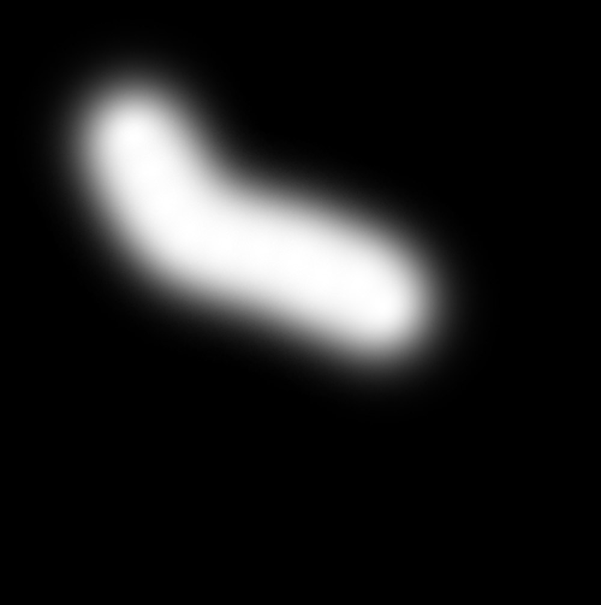
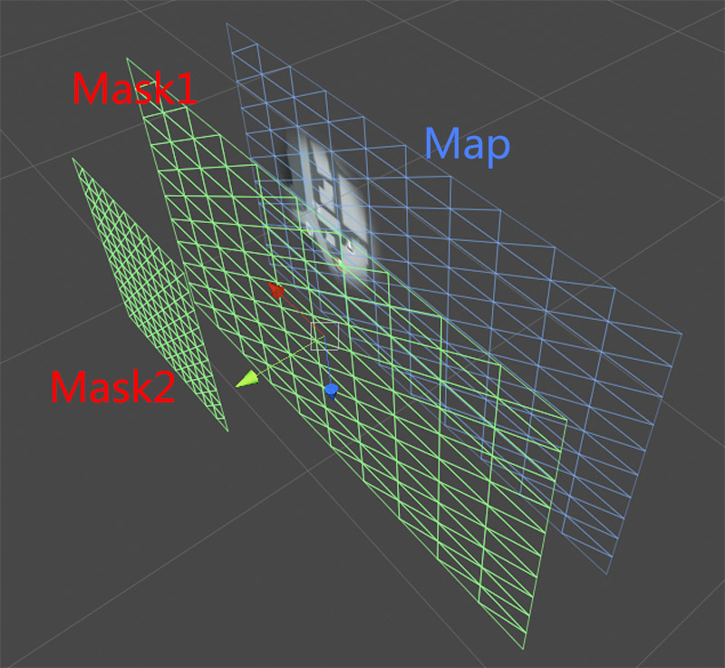

小地图制作
2016-9-12
我们要实现的小地图是类似下面这样的：
火炬之光截图

经过分析，其中主要的功能是如何表现出已探索区域和未探索区域，并且由于小地图不会占据屏幕很大的空间，所以随着玩家的走动小地图会左右上下滚动，当超出范围边框时会逐渐淡出。要实现这样的功能，主要用到的就是遮罩。这里用到两个遮罩，第一个遮罩用来标识区域是否探索，第二个遮罩用来标识小地图可滚动的范围，就像下面这样：
| Mask1 | Mask2 |
|---|---|
|  |
Mask1 中白色区域表示已探索，黑色区域表示未探索； Mask2 中白色区域是地图UI可见范围，地图滚动出这个范围就会淡出。编辑器中大致的结构如下图

Map 为地图截图， Mask1 和 Map 大小相同，会随着 Map 一起移动， Mask2 是地图UI的可见范围，是固定不动的。
Mask2 是美术提供的，和 UI 的尺寸刚好匹配。 现在暂且不考虑怎么生成 Mask2 ，就当做已经有这个功能了。那么问题的关键是如何将 Map 上的像素点和 Mask1 Mask2 上对应的像素点进行混合，即可得到正确的效果。这里给出关键的着色器代码：
// vertex shader
float4 vertexInMask1 = mul(_Mask1W2O, mul(_Object2World, v.vertex));
o.mask1UV = vertexInMask1.xz * 0.1 + 0.5;
float4 vertexInMask2 = mul(_Mask2W2O, mul(_Object2World, v.vertex));
o.mask2UV = vertexInMask2.xz * 0.1 + 0.5;
我们的思路是将 Map 中的顶点变换到 Mask1 的模型坐标中，由于 Mask1 使用的是 Unity 自带的 Plane（尺寸为10个单位长度，-5 到 5），所以乘以 0.1 后加 0.5 将值映射到 0 到 1 之间，而得到的这个值就可以当做 uv 值来使用了，从 Mask1 纹理中采样。 Mask2 同理。
// fragment shader
fixed4 col = tex2D(_MainTex, i.uv);
fixed4 mask1C = tex2D(_Mask1Tex, i.mask1UV);
fixed4 mask2C = tex2D(_Mask2Tex, i.mask2UV);
col.a *= mask1C.r * mask2C.r;
return col;
将 Map Mask1 Mask2 这三张纹理的对应像素进行混合即可，就能得到正确的效果了。还有一点很重要，就是要将 Mask 的 WrapMode 设置为 Clamp，而不是 Repeat，并且 Mask 边缘至少要留一个像素的黑色，这样当计算得到的 uv 值超出 0 到 1 的范围时也能得到正确的结果。
最后说一下如何生成 Mask1 的探索区域纹理。我们是这样做的，首先 Mask1 纹理是要可读写的，创建一个新的线程，在线程中对 Color 数组进行填充，然后在主线程中将 Color 数组写回到 Mask1 纹理中，并提交到 GPU。还有一种方法，就是 Mask1 本身是一张 RenderTexture，使用 Blit 对 Mask1 进行探索区域的填充。我们使用的第一种方法，第二种方法原理上是可行的，但是还有待测试。